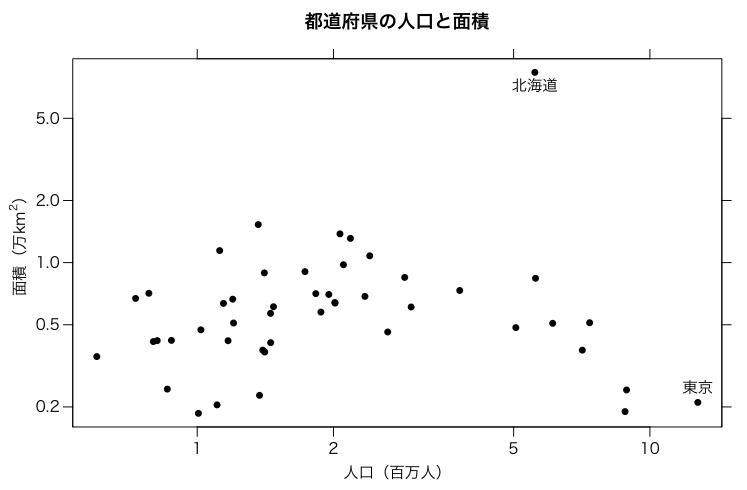

データの例として いろいろな都道府県別データ の人口と面積を使います。
横軸に人口，縦軸に面積をとった散布図（scatterplot）を描いてみましょう。基本的には
plot(population, area)
でいいのですが，見栄えを調整し，ついでにxもyも対数目盛りにします。
# par(family="HiraKakuPro-W3") # Mac
par(las=1) # 縦軸の文字を横向きにしない
par(mgp=c(2,0.7,0)) # マージンの調節（デフォルト: c(3,1,0)）
plot(population/1000, area/10000, xlab="人口（百万人）",
ylab="", pch=16, log="xy")
この pch=16 は点を黒丸にするためのものです。この 16
などの番号は右図のように決まっています。19 は 16
にボーダーを付けたもので，20 は 19 の小型版です。pch=kenmei
とすると，県名の1文字でプロットします。
一般にプロットは上下左右に外向きの目盛りを付けるほうがよいとされています。ここでも数値なしの目盛りを上と右に付けておきましょう。
axis(3, labels=FALSE) axis(4, labels=FALSE)
図の中に文字を書き込みましょう。最初の二つの値は座標で，pos
は1，2，3，4がそれぞれ下，左，上，右を表します。
text(population[kenmei=="東京都"]/1000,
area[kenmei=="東京都"]/10000,
"東京", pos=3)
text(population[kenmei=="北海道"]/1000,
area[kenmei=="北海道"]/10000,
"北海道", pos=1)
最後に標題を付けます。また，上では空にしてあったy軸のラベルをきれいに付けます。これらは
plot()
の中で
main=...
や
ylab=...
としてもよかったのですが，個別にフォントや位置を指定するために別にしました。
title("都道府県の人口と面積", family="HiraKakuPro-W6")
title(ylab=expression(paste("面積（万", km^2, "）")), line=2.5)

Last modified: 2009-05-10 06:59:37